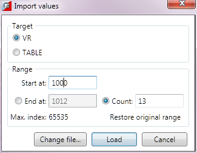
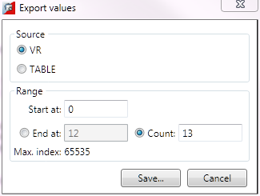

This allows the user to import or export ranges of TABLE or VR values. Values are directly written to or read from the controller being read from or written to files on the PC.
The following file formats are supported:
|
File Type |
Extension |
Description |
|
BASIC code |
BAS |
TrioBASIC program code to assign the TABLE or VR values. |
|
Comma Separated Value |
CSV |
A file containing lines consisting of pairs of comma separated values of the form: Index,value |
|
List |
LST |
A file containing lines of the form: Index;value Or Index;value0,value1, … ,valueN |
A standard file selector dialog is displayed to allow the user to select he file containing values to import. After selecting the file the Import Values dialog is displayed allowing the user to select a destination (TABLE or VR) and a start address/index for the import.

Clicking on "Restore original range" changes the start address/index back to that specified in the file.
The export values dialog is displayed allowing the user to select the source of the values (TABLE or VR), the start address/index and either the edd address/index or the number of values to export.

On closing this, a standard save dialog is displayed, allowing the user to specify the file name and type required.